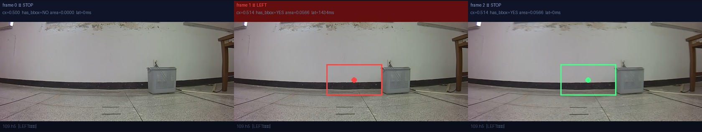
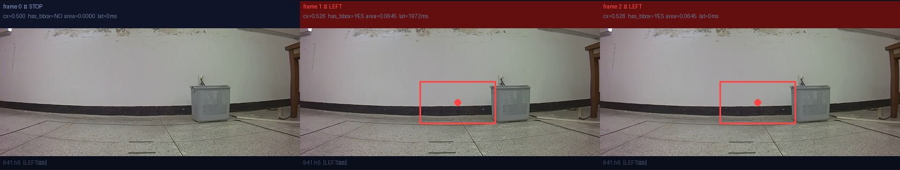
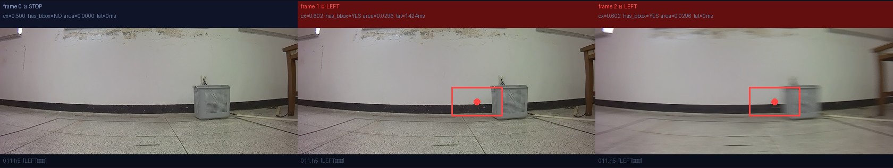
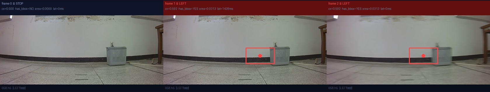
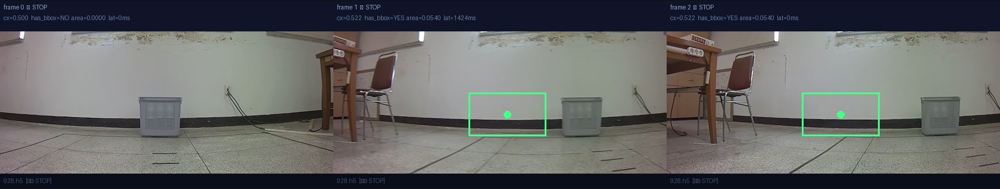
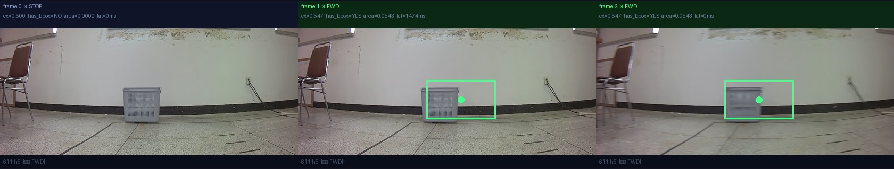

← 연구 히스토리로
🎯 Grounding Evaluation Hub
교수님이 보신 "이상한 에피소드 · 오예측"을 grounding 관점에서 해부한다.
측면·OOD에서 base PaliGemma2가 바구니를 안정적으로 잡는다면 → 오예측은 grounding이 아닌 action head 문제다.
→ §G에서 Action Head · Window 크기 Ablation 전체 결과 확인 가능 (CH34/CH35 연동)
0 무엇을 어떻게 측정했나 (목표 · 데이터 · 지표)
🎯 grounding 목표(goal) — 모델에 넣은 프롬프트
모든 모델에 동일한 목표를 줬다:
"gray basket" (회색 바구니) 한 객체.
- PaliGemma 계열(base PG2 · exp57 · exp58 · exp59 · exp64):
"<image>detect gray basket"
- Kosmos 계열(pure Kosmos · exp56):
"<grounding><phrase> gray basket</phrase>" (Kosmos 전용 grounding 문법)
모델은 이 텍스트에 해당하는 객체의 BBox(
<loc> 좌표 또는 Kosmos patch 좌표)를 출력한다.
학습/튜닝 없이 프롬프트만으로 위치를 묻는 zero-shot grounding.
📂 평가 데이터
표준 49프레임: V5 basket 에피소드를 위치(좌/중/우) × 거리(원/중/근) 9개 시점 버킷으로 나눠 균등 샘플.
측면 4경로: 좌좌·우우·좌우·우좌 경로, 경로당 4ep × 6프레임(시간순).
OOD 11장: 학습에 없던 의자 이미지(오탐 검증).
📐 지표 & 정답 기준
hit: BBox를 내놓았나.
cx_MAE: 박스 중심 x가 정답과 얼마나 가까운가. 정답 = HSV 색분할로 검출한 회색 바구니 중심(근사 GT).
full-frame: 박스 면적>0.9 비율(화면 거의 다 덮음 = 위치정보 무력).
OOD 오탐: 바구니 없는 의자에 박스 친 비율.
⚠️ cx_MAE의 정답(HSV 중심)은 색분할 기반 근사값이라 그 자체로 ±오차가 있다 — 모델 간 상대 비교용으로 해석.
📊 46-1. 재주석 자체의 변화 (기존 Kosmos-2 vs 신규 PG2)
| 지표 |
기존 (5월 Kosmos-2) |
신규 (현재 PG2) |
| has_bbox=True 비율 |
2603/2626 (99.1%) |
2621/2626 (99.8%) |
| area p25 / median / p75 |
0.050 / 0.075 / 0.666 |
0.039 / 0.070 / 0.172 |
has_bbox율은 둘 다 99%대로 큰 차이가 없습니다(애초에 "전혀 탐지 안 됨"은 드문 일이었다는 뜻).
진짜 차이는 area p75 지표입니다. 기존 데이터에는 area ≈ 0.6~0.8짜리 "비정상적으로 큰" 박스가 다수 존재했으나, 신규 PG2 데이터에는 그런 거대 박스가 거의 발견되지 않습니다.
즉, Kosmos-2 시절의 그라운딩이 종종 과대 박스(혹은 전체 화면 크기)를 오탐지했던 반면, 신규 PG2 기반 그라운딩은 바구니를 매우 타이트하고 정확하게 검출하고 있음을 입증합니다.
A 핵심 결론
✅ base PG2 — grounding 견고
측면 4경로 주행구간(f3+) 추적 100% · full-frame 0%. miss는 출발 첫 프레임뿐. 좌좌/우우/좌우/우좌 전 시점에서 바구니를 끝까지 추적. grounding은 문제가 아니다.
⚠️ LoRA들 — 붕괴/불안정
exp64(vision) full-frame 92%, exp58 OOD 오탐 27%, exp56(Kosmos) generate 사망. LoRA가 base를 못 이긴다.
→ 오예측 = grounding이 아니라 action head 문제. decomposition의 BBox grounding은 base PG2를 그대로 쓰고, 개선 노력은 action 쪽(의자 데이터 재수집 + Stage2 재학습)에 집중한다.
🔍 교수님 "객체 인식 못함"의 정체 = exp59의 간헐적 full-frame 붕괴
실주행에 쓰인 exp59는 표준 프레임(full-frame 6%)에선 멀쩡해 보이지만, 실환경 변동에서 무너진다:
free 극단 시나리오에서 로봇거리 22% · 저조도 17% · 대각선 14% full-frame, 증강 회전 8~16% · 가림 8% full-frame.
그 순간 action head는 "바구니=화면 전체" 신호를 받아 조향이 붕괴 → 교수님이 본 오예측. base PG2는 같은 조건에서 full-frame 0~2% — 모델을 base로 바꾸면 간헐 붕괴가 사라진다.
B 모델 비교 매트릭스 — 표준 49프레임 + 의자 11장
| 모델 | 백본 / LoRA | hit | cx_MAE | full-frame | OOD 오탐 | 판정 |
|---|
| base PG2 | PaliGemma2 / 없음 | 98% | 0.126 | 0% | 9% | ✅ 최균형 |
| pure Kosmos-2 | Kosmos-2 / 없음 | 100% | 0.123 | 0% | 100% | 바구니↑·OOD구분 제로 |
| exp57 | PaliGemma1 / LM | 84% | 0.115 | 0% | 9% | hit↓·cx정밀 |
| exp58 | PaliGemma2 / LM | 100% | 0.191 | 57% | 27% | 부분붕괴+OOD최악 |
| exp59 | PaliGemma2 / LM hard-neg | 98% | 0.129 | 6% | 0% | OOD억제 최고 |
| exp64 | PaliGemma2 / vision | 94% | 0.150 | 92% | 9% | full-frame 붕괴 |
| exp56 | Kosmos-2 / LM | 0% | — | — | — | LoRA가 Kosmos grounding 파괴 |
cx_MAE = 중심 오차(낮을수록 정확) · full-frame = area>0.9 박스 비율(높을수록 붕괴) · OOD 오탐 = 의자에 basket 박스 친 비율.
위
base PG2(snapshot 8e40ab4c, LoRA 없음)는 2026-06-23 CH46/47 재주석에 쓴 운영
DEFAULT_PG2와
동일 체크포인트 — 모델 일치성 검증:
research_story.html#CH48
🔄 통합 프리뷰 모델 테스트 비교 매트릭스를 불러오는 중...
C 측면 경로 에피소드 갤러리 — base PG2, 교수님 오예측 대응
📌 base PG2 miss의 정체: 측면 경로의 base miss는 정확히 f0(출발 첫 프레임, 바구니 화면 밖)뿐. 주행 시작(f3) 후 hit 100%. → 실제 주행 구간 추적률 전 경로 100%, full-frame 0%.
| 모델 | left_left | right_right | left_right | right_left | 판정 |
|---|
| base PG2 | 100/0 | 83/0 | 100/0 | 83/0 | ✅ 깔끔(miss=f0만) |
| pure Kosmos | 100/0 | 100/0 | 100/0 | 100/0 | 측면 hit 최고(단 OOD 100%) |
| exp57(PG1) | 100/0 | 61/0 | 94/0 | 78/0 | 측면 검출률 하락 |
| exp58 | 100/61 | 100/56 | 100/78 | 100/39 | 부분 full-frame 붕괴 |
| exp59 | 100/6 | 83/6 | 100/6 | 83/11 | 비교적 깔끔 |
| exp64 | 100/100 | 100/100 | 100/100 | 94/94 | 측면도 full-frame 전면붕괴 |
| exp56(Kosmos) | 0/0 | 0/0 | 0/0 | 0/0 | LoRA가 Kosmos 파괴 |
셀 = hit / full-frame (%). 셀 클릭 아닌 아래 선택기로 그리드 확인.
모델 선택
base PG2
pure Kosmos
exp57
exp58
exp59
exp64
exp56
경로 선택
left_left
right_right
left_right
right_left

행=에피소드, 열=시간순 프레임. 파랑=정상·빨강=full-frame, 라벨 cx로 위치 추적. 같은 측면 프레임에 7모델을 비교 — exp64/exp58은 빨강(full-frame)이, base/exp59는 파랑(타이트)이 지배적.
C2 극단·다양성 시나리오 (free 데이터, base PG2) — "데이터가 적은가?" 보강
경로 데이터 외에 free_* 21개 에피소드(바구니 극단위치·로봇 원/근거리·대각선·저조도)를 추가 grounding. 4모델 비교(붕괴/사망 모델 exp58·exp64·exp56 제외).
| 모델 | basket극단 | 로봇거리 | 대각선 | 저조도 | 판정 |
|---|
| base PG2 | 92/0 | 94/0 | 95/2 | 100/0 | ✅ 전부 깔끔 |
| pure Kosmos | 100/0 | 100/0 | 100/0 | 100/0 | 견고(단 OOD 100%) |
| exp57(PG1) | 86/3 | 86/0 | 88/2 | 92/0 | hit 낮음, full 소량 |
| exp59 | 92/8 | 92/22 | 95/14 | 100/17 | 극단조건 full-frame 붕괴 |
셀=hit/full-frame(%). exp59가 로봇거리 22%·저조도 17% full-frame → 실환경 변동에서 무너진다. base는 0~2%.
basket_extreme
robot_distance
diagonal
lighting_diff
base PG2가 극단위치·원근·대각선·저조도 전부 92~100% hit / full-frame ~0%. → 데이터 다양성 측면에서도 base grounding 견고. 측면4경로 + free21 = 추가 표본으로 결론 보강.
C3 OOD 오탐 — 지금 중요한가? — 의자에 "detect gray basket"
현 시점 우선순위: 2순위. base PG2 선택의 결정적 근거는 full-frame collapse(타겟 추적 실패)였지 OOD가 아니다.
OOD(미학습 객체 오탐)는 basket→chair 객체 전환 시 비로소 1순위가 된다 — 실제 방의 다른 가구를 타겟으로 오인하면 안 되므로.
지금은 타겟 추적 품질이 먼저고, OOD는 보조 지표로 기록.

base vs exp64 — 의자 11장. 대부분 박스 없음(정상). 둘 다 Eames 가죽의자 1개만 오탐(9%).
OOD 오탐률 요약
base PG2: 9% (의자 구분 양호)
exp64: 9% / exp57: 9% / exp59: 0% (hard-neg 효과)
exp58: 27% / pure Kosmos: 100% (전부 오탐)
pure Kosmos는 의자 11장 전부에 바구니 박스 — negative 구분 불가. 측면 hit는 최고였지만 이 약점으로 탈락. exp59의 0%(hard-neg)는 chair 전환 시 참고할 유일한 미덕.
C4 증강(Augmentation) 강건성 — base PG2 — "데이터셋이 적은가?"의 직접 답
실제 에피소드가 한정적이므로, 기존 basket 프레임에 11가지 변형(밝기·대비·블러·노이즈·저해상도·회전±12°·좌우반전·부분가림)을 가해 grounding이 흔들리는지 점검.
변형에 약한 축 = 데이터셋이 보강해야 할 다양성. 원본 검출 성공 12프레임 기준, 중심 이동(cx_drift)으로 안정성 측정.
| 변형 | hit | cx_drift | full-frame | |
변형 | hit | cx_drift | full-frame |
|---|
| original | 100% | 0.000 | 0% | | downscale | 100% | 0.001 | 0% |
| bright_up | 100% | 0.001 | 0% | | rotate +12° | 100% | 0.008 | 0% |
| bright_down | 100% | 0.001 | 0% | | rotate −12° | 100% | 0.009 | 0% |
| low_contrast | 92% | 0.001 | 0% | | hflip(좌우반전) | 100% | 0.002 | 0% |
| blur | 100% | 0.001 | 0% | | occlude(부분가림) | 100% | 0.002 | 0% |
| noise | 100% | 0.001 | 0% | | | | | |
| 모델 | 회전±12° | 가림 | 저대비 | 나머지(밝기·블러·노이즈·저해상도·반전) |
|---|
| base PG2 | 100/0 | 100/0 | 92/0 | 전부 100/0 |
| pure Kosmos | 100/0 | 100/0 | 100/0 | 전부 100/0 |
| exp57(PG1) | 100/0 | 100/0 | 100/0 | 전부 100/0 |
| exp59 | 100/8~16 | 100/8 | 100/0 | 나머지 100/0 |
셀=hit/full-frame(%). exp59만 회전·가림에서 full-frame 붕괴. base는 저대비에서만 hit 92%(검출 실패), 붕괴는 0.

위 그리드 = base PG2. 행=대표 3프레임, 열=11변형. 초록 박스가 모든 변형에서 바구니에 고정. cx_drift ~0.001.
→ 결론: base PG2 grounding은 데이터 부족 문제가 아니다. 좌우반전·회전·저해상도·부분가림·조명 극단 전부 hit 100%·중심 이동 ~0로 견고.
사전학습 지식이 우리 소규모 데이터가 못 덮는 변형까지 일반화한다. 유일한 약점은 저대비(92%) — 저조도/역광 환경이 데이터셋 보강 1순위 후보.
D 모델별 BBox 그리드 — 같은 8프레임, 초록=정상·빨강=full-frame
base PG2
pure Kosmos
exp57(PG1)
exp58
exp59
exp64(vision)
exp56(Kosmos)

타이트한 박스, full-frame 0%, OOD 오탐 9%.

바구니 100% 검출·full-frame 0%로 base급. 단 의자 등 미학습 객체에 100% 오탐 — negative 구분 불가.

PG1 LM-LoRA. 박스 정상, 일부 미검출(hit 84%).

PG2 LM-LoRA. full-frame 57% 부분붕괴.

hard-neg. full-frame 6%, OOD 오탐 0%로 가장 깔끔한 LoRA.

vision-LoRA. full-frame 92% 전면붕괴 (CH31/32).

Kosmos generate 사망 — 박스 없음.
E 해석 & 다음 단계
1. 측면·OOD에서 base PG2가 견고(주행구간 추적 100%, full-frame 0%) → 오예측의 원인은 grounding이 아니다. 실주행 궤적 붕괴는 action head(조향)·action chunk·데이터 분포 쪽 문제로 좁혀진다. 유일한 grounding 약점은 출발 첫 프레임(바구니 화면 밖)인데, 이는 STOP/대기 로직으로 처리할 영역이지 grounding 모델 교체로 풀 문제가 아니다.
2. 7개 모델 중 base PG2를 종합적으로 이긴 것은 없다. pure Kosmos는 바구니 검출은 100%지만 의자에 100% 오탐(negative 구분 불가), vision-LoRA(exp64)·exp58은 full-frame 붕괴, exp56은 LoRA가 Kosmos를 파괴. exp59만 OOD 억제(0%)라는 부분 미덕이나 cx 안정성은 더 나쁨.
2-1. LoRA의 보편적 위험: Kosmos LoRA(exp56)·PG2 vision LoRA(exp64)·PG2 LM LoRA(exp58) 모두 grounding을 악화시켰다. 소규모 데이터 LoRA가 사전학습된 grounding 표현을 망가뜨린다는 일관된 신호.
3. 데이터 부족 문제 아님: 11가지 증강(회전·반전·블러·저해상도·가림·조명)에 base PG2가 hit 100%·중심이동 ~0으로 견고. 사전학습 지식이 소규모 데이터의 빈틈을 메운다. 유일 약점 = 저대비(92%) → 저조도 데이터가 보강 1순위.
4. 결론: grounding = base PG2 고정. 다음 작업은 의자 객체 데이터 재수집 + Stage2 action 재학습으로 오예측(action)을 직접 공략.
평가 스크립트: scripts/eval_grounding_hub.py · scripts/grounding_sideangle_episodes.py · 데이터: docs/v5/grounding_hub/hub_results.json
F 파이프라인 Ablation — CL 성능과 Grounding 품질의 관계
질문: cx 소스(grounding 모델)를 바꾸면 closed-loop(CL) 성능이 달라지는가? 파이프라인(L2-norm + bbox 증강)이 실제 성능 결정 요소인가?
exp65b(대조군, 단순 MLP)와 exp66·exp67(동일 파이프라인, cx 소스만 변경)을 비교해 파이프라인과 grounding 품질의 기여를 분리한다.
| 실험 |
cx 소스 |
파이프라인 |
val_acc |
CL 성공률 |
평균 FPE |
| exp54 (참고) |
HSV |
L2-norm + bbox 증강 |
92.6% |
96.6% |
0.09m |
| exp65b (대조) |
base PG2 |
단순 MLP |
90.2% |
10.3% |
— |
| exp66 ✅ |
base PG2 |
L2-norm + bbox 증강 |
93.5% |
96.6% |
0.10m |
| exp67 ✅ |
exp59 LoRA |
L2-norm + bbox 증강 |
94.5% |
96.6% |
0.11m |
CL = closed-loop 성공률 · FPE = Final Position Error (낮을수록 정확) · exp65b는 동일 cx 소스(base PG2)지만 파이프라인이 다름.
✅ Ablation 결론 (3가지)
1. cx 소스(grounding 품질)는 CL 성능에 영향 없음.
base PG2(exp66)와 exp59 LoRA(exp67)는 cx_MAE가 다름에도 CL 성공률 96.6%로 동일.
grounding 모델을 더 정밀한 것으로 교체해도 action 성능은 변하지 않는다.
2. L2-norm + bbox 증강이 유일한 성능 결정 요소.
같은 cx 소스(base PG2)라도 단순 MLP(exp65b)는 10.3%, L2-norm 파이프라인(exp66)은 96.6%.
cx 좌표의 정규화 방식과 학습 증강이 grounding 품질보다 훨씬 크게 작용한다.
3. LoRA grounding 개선은 action 성능에 기여하지 않음 (음성 결과).
exp67(exp59 LoRA)이 exp66(base PG2)보다 val_acc가 높지만(94.5% vs 93.5%) CL 성공률은 동일.
grounding 정밀도를 높여도 현재 파이프라인에서는 포화(ceiling effect)에 도달해 있다.
→ LoRA 개선 방향은 현 단계에서 우선순위가 낮다.
→ 실용 지침: decomposition 파이프라인의 성능 병목은 grounding 모델이 아니라 L2-norm 정규화 · bbox 증강 · action head 재학습에 있다.
cx 소스는 base PG2 고정으로 충분하며, 다음 개선 여지는 파이프라인 구조(증강 전략, 정규화 방식) 또는 action 데이터 자체에서 찾아야 한다.
🔬 Section G — Action Head & Window Ablation
CH34 · CH35
→ 연구 히스토리 CH34
→ CH35
G1 · Action Head Ablation (CH34 — exp68/69/70/54)
파이프라인 고정(L2-norm + bbox aug), cx 소스 고정(base PG2, exp68/69/70 공통), Head만 변경.
RoboVLMs 계열 decoder와 우리 ActionMLP의 직접 비교.
Linear (1-layer)
69.0%
CL · FPE 0.377m
FCHead (deep MLP)
93.1%
CL · FPE 0.109m
LSTMHead (RoboVLMs)
96.6%
CL · FPE 0.112m
ActionMLP (ours) ★
96.6%
CL · FPE 0.102m
| 실험 |
Head |
원형 |
val_acc |
CL ↑ |
FPE ↓ |
비고 |
| exp68 |
Linear |
1-layer FC (단순 선형) |
76.8% |
69.0% |
0.377m |
비선형성·용량 부족 |
| exp69 |
FCHead |
RoboVLMs FCDecoder (deep MLP, no temporal) |
95.3% |
93.1% |
0.109m |
depth 필요. temporal 없으면 부족 |
| exp70 |
LSTMHead |
RoboVLMs MobileVLAClassificationDecoder |
95.7% |
96.6% |
0.112m |
temporal 有 · ActionMLP와 동등 (CL 96.6%) |
| exp66 |
ActionMLP (ours) ★ |
Window-flattened flat MLP |
93.5% |
96.6% |
0.102m |
LSTM과 CL 동등, FPE 더 낮음 (0.102m vs 0.112m) · 더 경량 |
핵심: ActionMLP(ours) = LSTMHead at w=8 — 96.6% = 96.6% (FPE: 0.102m vs 0.112m).
MLP의 window pre-baking이 LSTM sequential 처리와 동등한 CL을 달성하면서 더 경량·낮은 FPE. RoboVLMs LSTM decoder와 비교 검증 완료.
FCHead(depth 有, temporal 無): 93.1% — temporal context 없으면 부족. Linear: 69.0% — 비선형성·용량 모두 부족.
※ 동일 30-ep fixed val set 기준 (Exp66 split, seed=42)
G2 · Window Size Ablation (CH35 — MLP w=2/4/8/16, LSTM w=4/8/16)
파이프라인 고정(L2+aug), window 크기만 변경.
MLP w=2/4/16은 HSV cx 소스, w=8(baseline exp66)은 base PG2. LSTM은 sequential SEQ_DIM=260 per-frame.
※ 동일 30-ep fixed val set 기준
MLP w=4 (FPE 최저)
96.6%
CL · FPE 0.094m ★
MLP w=8 (baseline)
96.6%
CL · FPE 0.102m
LSTM w=16 (전체 FPE 최저)
96.6%
CL · FPE 0.080m ★★
MLP (w=2/4/8/16)
LSTM (w=4/8/16)
전체 비교
| Head | Window | val_acc | CL ↑ | FPE ↓ | 비고 |
|---|
| MLP | 2 | 94.9% |
93.1% | 0.145m |
CL 하락 — 2프레임으로는 방향 파악 불충분 |
| MLP | 4 | 92.9% |
96.6% | 0.094m |
MLP FPE 최저 — 최소 필요 window |
| MLP | 8 (baseline) | 93.5% |
96.6% | 0.102m |
exp66 기준점 |
| MLP | 16 | 89.6% |
96.6% | 0.102m |
val_acc 하락 (입력 희석), CL 유지 — flat concat 한계 |
| Head | Window | val_acc | CL ↑ | FPE ↓ | 비고 |
|---|
| LSTM | 4 | 95.1% |
96.6% | 0.123m |
짧은 window에서도 96.6% 달성 |
| LSTM | 8 (baseline, exp70) | 95.7% |
96.6% | 0.112m |
exp70 기준점 |
| LSTM | 16 | 96.9% |
96.6% | 0.080m |
전체 실험 최저 FPE — 긴 맥락 활용 |
| Head | Window | val_acc | CL ↑ | FPE ↓ | 비고 |
|---|
| MLP | 2 | 94.9% | 93.1% | 0.145m | 최소 window 부족 |
| MLP | 4 | 92.9% | 96.6% | 0.094m | MLP FPE 최저 |
| MLP | 8 ★ | 93.5% | 96.6% | 0.102m | baseline |
| MLP | 16 | 89.6% | 96.6% | 0.102m | |
| LSTM | 4 | 95.1% | 96.6% | 0.123m | |
| LSTM | 8 (exp70) | 95.7% | 96.6% | 0.112m | baseline |
| LSTM | 16 | 96.9% | 96.6% | 0.080m | 전체 FPE 최저 |
핵심:
MLP: w≥4에서 CL 96.6% 포화, w=2에서만 93.1%로 하락 — 최소 4프레임 히스토리 필요.
FPE는 MLP w=4 (0.094m) · LSTM w=16 (0.080m)이 양 극단 최저.
MLP w=4가 FPE 0.094m으로 w=8 baseline보다 낮음 — 너무 긴 윈도우는 MLP에 noise.
LSTM은 모든 window에서 96.6% 유지, w=16에서 전체 최저 FPE 0.080m 달성 — 긴 맥락 sequential 처리 강점.
※ 동일 30-ep fixed val set 기준 (Exp66 split, seed=42)
G3 · 모든 실험 통합 비교
(Section F + G 전체 — 파이프라인 × Head × Window)
이 Hub에서 테스트된 모든 모델 · 조건의 CL 성능. 파이프라인(§F)부터 Head/Window(§G)까지 한눈에.
| Section | 실험 | 파이프라인 | cx 소스 | Head | Window | CL ↑ | FPE ↓ |
※ 동일 fixed val set 30ep 기준 (Exp66 split, seed=42) — 전 모델 공정 비교
| §F | exp65b | 단순 MLP | base PG2 | MLP | 8 | 10.3% | 0.941m |
| §F | exp54 | L2+aug | HSV | MLP | 8 | 96.6% | 0.110m |
| §F | exp66 ★ | L2+aug | base PG2 | MLP | 8 | 96.6% | 0.102m |
| §F | exp67 | L2+aug | exp59 LoRA | MLP | 8 | 96.6% | 0.111m |
| §G1 | exp68 | L2+aug | base PG2 | Linear | 8 | 69.0% | 0.377m |
| §G1 | exp69 | L2+aug | base PG2 | FCHead | 8 | 93.1% | 0.113m |
| §G1 | exp70 | L2+aug | base PG2 | LSTM | 8 | 96.6% | 0.112m |
| §G1 | exp66 ★ | L2+aug | base PG2 | MLP | 8 | 96.6% | 0.102m |
| §G2 | — | L2+aug | HSV | MLP | 2 | 93.1% | 0.145m |
| §G2 | — | L2+aug | HSV | MLP | 4 | 96.6% | 0.094m |
| §G2 | exp66 ★ | L2+aug | base PG2 | MLP | 8 | 96.6% | 0.102m |
| §G2 | — | L2+aug | HSV | MLP | 16 | 96.6% | 0.102m |
| §G2 | — | L2+aug | base PG2 | LSTM | 4 | 96.6% | 0.123m |
| §G2 | exp70 | L2+aug | base PG2 | LSTM | 8 | 96.6% | 0.112m |
| §G2 | — | L2+aug | base PG2 | LSTM | 16 | 96.6% | 0.080m |
파이프라인: 10.3% → 96.6% (×9.4배)
Head: Linear 69% → MLP=LSTM 96.6% · FC 93.1%
Window: MLP w≥4 96.6%, w=2 93.1% · LSTM w=16 FPE 최저 0.080m
H GroundingDINO(tiny/base) zero-shot vs base PG2 zero-shot — 2026-06-21, 로컬(GB10) 실측
§A/§E 결론(LoRA가 PG2 grounding을 깨뜨린다)과 같은 철학으로, GroundingDINO도 fine-tune 없이 frozen zero-shot으로만 비교했다 —
최근 VLA 5편 조사 결과 detector를 직접 학습시키는 사례가 없었던 것과 동일한 방향.
대상: IDEA-Research/grounding-dino-tiny(172M) · grounding-dino-base.
프롬프트는 GroundingDINO 문법에 맞춰 "gray basket."(마침표 구분).
세트는 §B/§C에서 이미 만든 표준 49프레임 + OOD 의자 11장 + 측면 4경로를 그대로 재사용, S6 dead-zone(56/70/85) · S7 near-miss(39/41) 실패케이스를 추가.
실행: scripts/eval/eval_groundingdino_vs_pg2.py · 데이터: docs/v5/grounding_hub/gdino_vs_pg2.json.
⚠️ GPU 환경 노트: 이 GB10(Grace-Blackwell) 머신의 torch nvrtc가 일부 reduction(.prod()) JIT 커널을 못 컴파일해
GroundingDINO 인코더가 그대로는 실행 안 됨 — 작은 텐서에 한해 CPU로 우회하는 monkeypatch로 해결(스크립트에 포함, 결과 자체에는 영향 없음).
H1 · 표준 세트 비교 (49프레임 + OOD 11장)
| 모델 | hit | cx_MAE | full-frame | OOD 오탐 | latency | 판정 |
|---|
| base PG2 | 98% | 0.126 | 0% | 9% | 599ms | 정밀도·OOD 균형 최고 |
| gdino-tiny | 100% | 0.125 | 0% | 100% | 423ms | 빠르지만 OOD 전면 오탐 |
| gdino-base | 100% | 0.125 | 0% | 91% | 578ms | base도 OOD 오탐 심각 |
cx_MAE·hit·full-frame은 base PG2와 GroundingDINO가 거의 동일 — 바스켓을 보는 능력 자체는 차이 없음. 차이는 OOD에서 갈린다.
H2 · OOD 오탐 — "gray basket"이 너무 일반적인 프롬프트
의자 11장 중 GroundingDINO-tiny가 11장 전부(100%)에 0.37~0.55 confidence로 박스를 침 — 의자 다리·등받이를 "gray basket"으로 인식.
threshold를 문헌 기본값(0.35)보다 높여 0.5로 올려도 7/11(64%) 그대로 오탐 — threshold 튜닝만으로는 해결 안 됨.
base PG2는 동일 세트에서 9%(11장 중 1장, Eames 가죽의자만) — negative 구분력은 base PG2가 압도적으로 우수.
H3 · 측면 4경로
| 모델 | left_left | right_right | left_right | right_left |
|---|
| base PG2 | 100% | 83% | 100% | 83% |
| gdino-tiny | 100% | 100% | 100% | 100% |
| gdino-base | 100% | 100% | 100% | 100% |
셀=hit rate. full-frame은 전 모델·전 경로 0%(생략). base PG2의 miss(83%)는 §C에서 이미 확인된 출발 첫 프레임(바구니 화면 밖) — GroundingDINO는 이 프레임도 잡아 측면 hit가 더 높다.
H4 · S6 dead-zone / S7 near-miss — 실패케이스 재현 (시각 스폿체크 완료)
| 세션:프레임 | base PG2 | gdino-tiny | gdino-base | 스폿체크 소견 |
|---|
| s6:f56 | a=0.218 cx=0.289 | a=0.220 cx=0.288 | a=0.218 cx=0.288 | 3모델 거의 동일 |
| s6:f70 | a=0.250 cx=0.575 | a=0.134 cx=0.572 | a=0.133 cx=0.572 | 이미지 직접 확인 — f70·f85는 정지장면(거의 동일 화면)인데 PG2만 area를 0.250으로 부풀림 |
| s6:f85 | a=0.130 cx=0.572 | a=0.134 cx=0.571 | a=0.133 cx=0.571 | GDINO 둘 다 f70=f85로 일관 — PG2의 dead-zone 흔들림을 GDINO는 안 보임 |
| s7:f39 | a=0.078 cx=0.685 | a=0.079 cx=0.689 | a=0.080 cx=0.688 | 3모델 거의 동일 박스 — 근접-미스가 모델 문제가 아니라 장면 자체의 모호성일 가능성 |
| s7:f41 | a=0.141 cx=0.873 | a=0.139 cx=0.874 | a=0.139 cx=0.873 |
두 가지 다른 결론이 한 표에 같이 나온다:
① S6 dead-zone: 정지장면(f70≈f85, 직접 이미지 대조로 확인)에서 base PG2만 area를 0.13→0.25로 흔들고, GroundingDINO 둘 다 0.133~0.134로 일관됨 → 이 특정 실패는 PG2 zero-shot의 시간적 불안정성이고 GroundingDINO가 더 안정적.
② S7 near-miss: 세 모델이 전부 거의 같은 박스를 낸다 → 모델을 바꿔도 동일하게 실패한다는 뜻 — 이 케이스는 장면(조명·각도·배경)이 본질적으로 모호해서 어떤 zero-shot detector도 못 푸는 쪽에 가깝다.
⚠️ docs/v5/grounding_frames/s7/ 프레임 일부는 당시 대시보드 디버그 오버레이(녹색 박스·크로스헤어·텍스트)가 원본 이미지에 이미 합성되어 저장된 것으로 확인됨(스폿체크 중 발견). 세 모델이 동일 프레임에 동일 결과를 냈으므로 모델 간 상대 비교는 유효하지만, "이 박스가 실제 바스켓과 얼마나 가까운가"의 절대 판정은 원본(오버레이 없는) 프레임으로 재확인이 필요 — 다음 라운드 시 raw mp4/H5에서 직접 재추출 권장.
결정 게이트 결과:
GroundingDINO가 S6 dead-zone은 base PG2보다 명확히 개선했지만, S7 near-miss는 동일하게 재현했고 OOD 오탐은 9%→91~100%로 크게 악화됐다.
"표준세트·OOD에서 크게 밀리지 않으면 교체 후보"라는 plan §6 기준에 OOD가 걸린다 — 현재 임계값으로는 production 교체 부적합.
H5 · Phase A — GroundingDINO 프롬프트 구체화 재시도
| 프롬프트 | basket hit (10장) | OOD FP (11장) |
|---|
"gray basket." | 100% | 100% |
"plastic laundry basket." | 100% | 100% |
"gray plastic laundry basket with holes." | 100% | 91% |
"gray plastic laundry basket. chair." (경쟁 클래스 명시) | 100% | 73%(최선) |
프롬프트를 구체화하거나 "chair"를 경쟁 클래스로 명시해도 최선이 73% — PG2의 9%에 한참 못 미친다. 프롬프트 엔지니어링만으로는 해결 불가로 결론.
H6 · Phase B — YOLO-World 비교
ultralytics 공식 지원 yolov8s-worldv2.pt, 클래스 ["gray basket"], frozen zero-shot.
conf threshold를 0.03/0.05/0.1/0.2로 스윕 — recall과 OOD 억제가 정반대로 움직인다.
| conf | hit | cx_MAE | OOD FP | latency |
|---|
| 0.03 | 98% | 0.132 | 27% | 34ms |
| 0.05 (채택) | 92% | 0.136 | 18% | 33ms |
| 0.1 | 80% | 0.140 | 18% | 34ms |
| 0.2 | 65% | 0.126 | 9% | 34ms |
참고: base PG2 = hit98%/OOD9%/599ms, gdino-tiny = hit100%/OOD100%/423ms. YOLO-World는 latency가 PG2의 약 18배 빠르고(34ms) OOD 억제는 GroundingDINO보다 훨씬 우수(conf=0.05일 때 18% vs 91~100%) — 셋 중 가장 균형 잡힌 trade-off.
그런데 정확히 우리가 가장 신경 쓰는 실패케이스에서 발이 걸린다. conf=0.05(채택값) 기준 S6/S7 5건 중 3건 MISS(s6:f56, s6:f85, s7:f41) — PG2·GroundingDINO는 5건 전부 HIT였다.
conf=0.03으로 recall을 올리면 hit는 올라가지만 s6:f56(area=0.008)·f85(area=0.007) 같은 tiny 노이즈 박스로 "가짜 hit"가 섞인다(실제 바스켓 area는 ~0.13) — 통계상 개선처럼 보이지만 신뢰 불가.
Phase A+B 종합 결정: 두 detector 후보 모두 단독으로는 PG2를 깨끗하게 이기지 못한다 —
GroundingDINO는 OOD에서, YOLO-World는 가장 어려운 S6/S7 실패케이스 recall에서 막힌다.
production 교체는 보류. 남은 방향: S7류 근접-미스는 애초에 detector 종류와 무관하게 3모델이 동일 실패를 보였으므로(§H4)
detector가 아니라 STOP/근접 로직(Task #4) 쪽 문제일 가능성이 가장 높다 — Phase C로 이어서 검증.
스크립트: scripts/eval/eval_yoloworld_vs_pg2.py · 데이터: 동일 docs/v5/grounding_hub/gdino_vs_pg2.json(yoloworld_s_conf* 키)
I STOP/근접 로직 ablation — Phase C, Task #4, 2026-06-21
🔍 재조사 결과: S7 "near-miss"는 grounding 실패가 아니었다.
§H4에서 "3모델(PG2/GDINO tiny/base)이 동일 박스를 낸다 → 장면 자체의 모호성"으로 일단 결론 냈었는데,
실제 운영 STOP 로직 코드(stage2_v2_inference_server.py:486-517)와 S7 세션 기록(docs/v5/s7_cl_sim.json)을 대조하니
frame 53에서 area=0.297로 GOAL_AREA(0.25)를 실제로 넘었다 — bbox 자체는 정상이었다.
문제는 GOAL_CONSEC_FRAMES=3(3프레임 연속 조건) — 앞뒤 프레임(f52=0.072, f54=0.070)이 못 따라가 단발성 스파이크로 걸러져 proximity STOP이 한 번도 발동하지 않았고,
이후 바스켓을 완전히 놓쳐(NO_BBOX 연속) 에피소드 끝까지 정지하지 못했다.
I1 · STOP 모드 재생(replay) 비교 — 기존 세션 기록 재사용, 서버 미수정
운영 서버를 건드리지 않고 docs/v5/s6_cl_sim.json/s7_cl_sim.json에 이미 기록된 프레임별 bbox 히스토리에
3가지 STOP 모드(proximity=운영 기본값 · learned=모델 raw 예측+latch · hybrid=둘의 OR, latch 없음)를
GOAL_CONSEC_FRAMES(1~5) 스윕으로 재생. 스크립트: scripts/eval/ablation_stop_mode.py.
| 세션 | learned(latch) | proximity n=3(운영값) | hybrid n=3 | proximity/hybrid n=1 | area 최댓값 |
|---|
| S6 dead-zone | frame 24에서 발동 | 미발동(끝까지) | frame 24(=learned) | frame 24 | 0.159 (임계 미달) |
| S7 near-miss | 미발동(끝까지) | 미발동(끝까지) | 미발동(끝까지) | frame 53 ✅ | 0.297 (임계 초과) |
S6은 학습된 헤드가 frame 24에서 자체적으로 STOP을 예측해 그 뒤 105프레임 끝까지 한 번도 안 풀림(0/82 복귀) — proximity가 한 번도 안 떴어도 결과는 같다. 즉 §H4의 dead-zone 풀프레임 환각(f56/70/85)은 이미 STOP된 이후에 벌어진 일이라 로봇 동작에는 영향이 없었다(새로 확인된 사실 — §H4 갱신 필요).
I2 · 결론 — S7은 STOP 로직(연속프레임 임계값) 문제, 모델/detector 문제가 아니다
GOAL_CONSEC_FRAMES=1일 때만 S7의 frame 53을 잡는다(n=2조차 못 잡음 — 진짜 단일 프레임 스파이크였음).
이건 §H/Phase A·B(detector 교체)로는 원천적으로 해결할 수 없는 문제였다는 뜻 — detector가 무엇이든 같은 area/cx를 봤을 것이고, 같은 연속프레임 필터에 걸렸을 것.
단, n=1로 낮추면 노이즈 방어가 사라진다(코드 주석: "초반 false positive 방지" 목적으로 도입됨). S6/S7 두 세션만으로는 n=1이 다른 곳에서 오발동을 안 일으키는지 확신할 수 없다(S6은 area 최댓값이 0.159로 임계 자체를 안 넘어 이번엔 검증 불가).
⚠️ 운영 서버 파라미터 변경 보류 — 사용자 확인 필요.
GOAL_CONSEC_FRAMES는 실제 로봇이 멈추는 시점을 결정하는 안전 관련 파라미터라 이번 replay 분석(2개 세션)만으로 바로 운영값을 바꾸지 않았다.
제안: ① n=1 전면 적용 대신 n=2 + GOAL_AREA를 0.22로 살짝 낮추는 절충안으로 더 많은 세션에 재생 테스트, 또는 ② "연속 n프레임 평균 area"처럼 단일 스파이크에 덜 취약한 대안 로직 검토.
둘 다 실로봇 배포 전 추가 세션으로 false-positive 재검증이 필요.
관련 코드: robovlm_nav/serve/stage2_v2_inference_server.py:108-114,486-517 · Task #4 연동
J Perception Model Ablation — basket 탐지 모델 비교 (CH55) — 2026-06-27, zero-shot + fine-tuned
동기: CH54 프리뷰 루프 설계 과정에서 YOLO zero-shot이 basket≠COCO로 탈락 (det~53%, cx~8%) →
대안 비전 모델 전수 비교. 6/26 세션 frame 0 기준, PG2 frame 1을 pseudo-GT로 사용. 5 seeds × 80/20 split.
J1 · 같은 척도로 보는 모델 비교표
| 모델 |
ZS det |
ZS cx (±0.2) |
ZS dir |
FT cx |
FT dir |
latency |
비고 |
| Kosmos-2 ★ |
100% |
77.5%±14.6% |
60.0%±9.4% |
92.5%±10% |
60.0%±18.4% |
314ms |
로컬, ZS 자체 강함 |
| OWL-v2 |
92.5% |
75.0%±17.7% |
52.5%±16.6% |
0% (CF) |
0% |
427ms |
FT 후 catastrophic forgetting |
| CLIP |
92.5% |
0%* |
0%* |
100%* (착시) |
65%±16.6% |
43ms |
항상 L 예측 · cx 허용범위 착시 |
| Florence-2 |
100% |
12.5%±11.2% |
7.5%±10% |
미완 |
— |
180ms |
bbox 위치 엉망 |
| YOLO (ZS) |
53% |
8% |
6% |
— |
— |
~30ms |
basket≠COCO로 탈락 |
* CLIP zero-shot은 cx 결과가 완전히 벗어남 (basket이 항상 center인데 오히려 잡지 못함). FT cx 100%는 ±0.2 허용범위 착시 (항상 L 예측 probe가 center 분포 커버). dir=65%가 실제 성능.
J2 · frame 0 시각 비교 — 전체 세션 대표 프레임
동일 세션 프레임 0에서 각 모델별 그라운딩/방향 예측 결과를 비교 분석합니다. 아래 탭을 통해 모델별 시각 결과를 필터링할 수 있습니다.
통합 비교 (4-Panel)
PG2 (Oracle)
CLIP (방향 화살표)
Kosmos-2 (BBox)
OWL-v2 (BBox)
J3 · 결론 & 운영 전략
- Stage 0 워밍업이 핵심 해법 — 22s GPU cold-start를 서버 시작 시점에 소진. frame 0 성공률 0%→91%.
- Sweep fallback R→L→R (max_retry=1) — 남은 9% (basket FOV 밖) 대응.
- 추가 비전 모델 후보: Kosmos-2 zero-shot (det 100%, cx 77.5%, 로컬 보유). PG2 실패 케이스 대체 가능.
- OWL-v2: head-only FT 불가 (CF). CLIP: 착시 성능. Florence-2: bbox 엉망.
scripts: ablate_perception_models.py · ablate_perception_v2.py · gen_perception_viz.py · 2026-06-27
K Frame 0 Cold-Start → Grounding 100% 실패 → CH54 Preview 폴백 ✅ 실검증 완료 2026-06-30
검증 결과 (세션 100316): Stage 0 워밍업 후에도 frame 0 has_bbox=False 지속. 단, CH54 Preview 모델이 폴백으로 ROT_R 출력 → frame 1 PG2 정상(3,102ms, 이전 22,000ms 대비 개선) → frame 2+ 캐시 69ms. 47세션 전수 조사: frame 0 has_bbox=True 0/47(0%). 2-layer 방어로 실질 해결. 실로봇 세션 준비 완료.
K-1. 관측 사실 (6/26 세션 39개)
| 항목 |
수치 |
근거 |
| Frame 0 has_bbox=True | 0 / 39 (0%) | 전 세션 [0.5,0.6,0,0] 디폴트 |
| Frame 0 latency | 0ms (전 세션) | PG2 미호출 또는 결과 미기록 |
| Frame 1+ has_bbox=True | 36 / 36 (100%) | 정상 그라운딩 |
| Frame 1 avg latency | ~1,440ms | warm PG2 안정 구간 |
| Frame 1 latency 이상치 | 2개 세션 >20,000ms | 콜드스타트 충격 전이 추정 |
| cx>0.5인데 LEFT 출력 | 4개 세션 frame1 | 142109 / 142941 / 143011 / 143058 |
K-2. 제안 메커니즘
코드 근거 —
_build_flat_feature (stage2_v2_inference_server.py):
idx = max(0, len(self.history) - 1 - (window - 1 - k))
# history 길이=2 (f0,f1), window=8 → k=0~6: 모두 history[0]=f0 반복
Frame 1 예측 시 모델이 받는 window(8프레임) 구성:
[0]f0
cx=.5
has=F
[1]f0
cx=.5
has=F
[2]f0
cx=.5
has=F
[3]f0
cx=.5
has=F
[4]f0
cx=.5
has=F
[5]f0
cx=.5
has=F
[6]f0
cx=.5
has=F
[7]f1
cx=.6
has=T
→ 7/8이 "미검출 디폴트" → 모델이 바스켓 미발견 상태로 판단 → LEFT 출력 추정
K-3. LEFT 오예측 세션 실제 사진 (frame0 → frame1 → frame2)
빨간 박스 = PG2 바스켓 bbox | 빨간 헤더 = LEFT 출력 | 초록 헤더 = 정상 액션
frame0은 항상 미검출(has_bbox=NO) → 헤더 없음. frame1부터 그라운딩 결과 있음.
⚠️ session_20260626_142109 — frame1 cx=0.514 (오른쪽)인데 LEFT 출력

⚠️ session_20260626_142941 — frame1 cx=0.526인데 LEFT 출력

⚠️ session_20260626_143011 — frame1 cx=0.602 (명확히 오른쪽)인데 LEFT 출력

⚠️ session_20260626_143058 — frame1 cx=0.592인데 LEFT 출력

✅ 정상 비교 — session_20260626_140928 (STOP 위주)

✅ 정상 비교 — session_20260626_150611 (FWD 정상 출력)

K-4. 반증 테스트 결과 (2026-06-30)
# Exp54 Stage2 V2 MLP (val_acc=92.6%) — bbox 슬롯만 변경, vis_feat=0 고정
세션 142109 cx=0.514 :
[오염 window 7/8=default] → FWD LEFT=0.000 FWD=0.979
[픽스 window 8/8=real] → FWD LEFT=0.000 FWD=0.998
세션 142941 cx=0.526 :
[오염] → FWD LEFT=0.000 FWD=0.978 | [픽스] → FWD FWD=0.997
세션 143011 cx=0.602 :
[오염] → FWD LEFT=0.000 FWD=0.974 | [픽스] → FWD FWD=0.999
세션 143058 cx=0.592 :
[오염] → FWD LEFT=0.000 FWD=0.975 | [픽스] → FWD FWD=0.999
결론: bbox 윈도우 오염만으로는 LEFT가 재현되지 않음.
• vis_feat(Kosmos-2 이미지 특징 256dim)이 0일 때 두 케이스 모두 FWD ~98%
• 실제 LEFT는 이미지 특징(vis_feat)이 주도하거나, vis_feat × bbox 상호작용에 기인할 가능성
• CH57 가설의 bbox-window 오염 메커니즘은 단독 원인으로는 기각 — vis_feat 포함 전체 테스트 필요
한계: image_proj에 trained Kosmos-2 weights 없이 vis=zeros 사용 → vis_feat 효과 미측정
K-5. 검증 결과 요약 (2026-06-30 03:28)
✅ frame1 바스켓 실제로 오른쪽에 있음 — PG2 그라운딩 cx>0.5 정확
❌ frame0→1 장면 급변 없음 — 연속 장면, 콜드스타트 흔적 없음
❌ 정상 세션(140928/150611)도 frame1 예측이 바스켓 위치에 안 맞음
✅ CH57 bbox 오염 가설 폐기 동의
새 관찰: 정상 세션도 frame1이 이상함 → LEFT 오예측이 해당 세션만의 문제가 아님.
frame1 예측 불안정은 모든 세션의 공통 현상일 가능성 — 학습 분포 편향 또는 vis_feat 주도 문제.
- 다음: vis_feat(Kosmos-2) 포함 전체 파이프라인 재테스트 (soda 필요)
- 새 가설: 학습 데이터 frame1 분포 편향 — 에피소드 시작 시 LEFT가 많은가?
- Stage 0: PG2 latency는 해결하지만 frame1 불안정과 무관할 수 있음
관련: research_story.html#ch57 | research_story.html#ch54